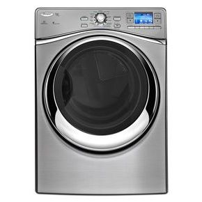
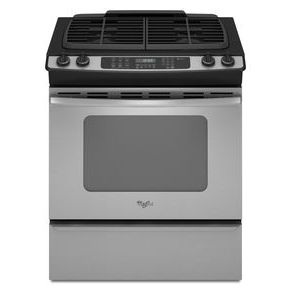
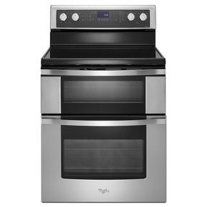

Washers
-
WFL98HEBU NEW
-
WFW96HEAW
-
WFW94HEAC
-
WFW88HEAW
-
WFW86HEBW
-
WFW70HEBW
-
WFC7500VW
Dryers
-
WEL98HEBU NEW
 -
WGD96HEAW
-
WED96HEAW

-
WGD94HEAC
-
WED94HEAC

-
WGD88HEAW
-
WFW94HEAC
Refrigerators
-
GI0FSAXVY NEW
-
WRX988SIBM
-
WRF989SDAM
-
WRX735SDBM
-
WRF736SDAM
-
GI6FARXXY
-
WRF560SEYW

Ranges
-
WGI925C0BS NEW
-
WDE350LVS
-
GW399LXUS
 -
GY399LXUS
-
WGG755S0BS
-
WFI910H0AS
-
WGE755C0BS

WFW96HEAU
4.3 cu. ft. Duet® Steam Front Load Washer with Precision Dispense Ultra
Selling in 60 Seconds
-
The Ultimate in Laundry Convenience
The Load & Go™ system uncomplicates the task of adding laundry detergent and eliminates the guesswork
-
Maximizing Time When Doing Laundry
Dynamic Venting Technology,® makes it possible to wash and dry small loads of clothes quickly and easily right in the washer
-
Technology that Preserves the Perfect Fit
Advanced Moisture Sensing uses sensors to end the drying cycle when everything is perfectly dry, helping to prevent overdrying and damage to fabrics.
-
A Washer that Adjusts so Customers Don't Have To
Adaptive Wash technology senses and adapts to provide the ideal cleaning and care for every article of clothing.
Cold Wash Cycle™
Provides the best care for your clothes, using adaptive wash actions together with a concentrated solution of HE detergent and cold water to gently lift stains and soils from fabrics. This cycle delivers great cleaning while protecting fabrics from heat damage and using less energy.
View DemoPrecision Dispense
Penetrates strains and pre-treats soils with a concentrated burst of detergent. The wash cycle begins only after the entire load has been treated. Precision Dispense Plus adds the ability to release oxygenated additives for better cleaning performance.
View Demo12-Hour FanFresh Option
Keep your clean clothes fresh and free from odors for up to ten hours with the exclusive Dynamic Venting Technology™. This feature circulates air in the washer after the cycle ends, allowing you to wash now and dry later
View Demo